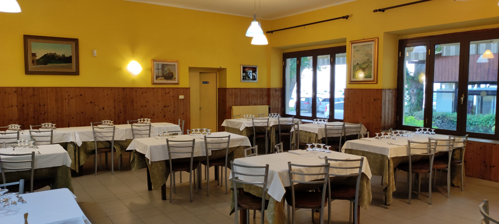

Gallery
La terrazza è la parte del ristorante più ambita durante la stagione estiva, offre uno scorcio del lago di Bolsena mozzafiato. Incantevole.
Gallery
La veranda con le sue ampie ed eleganti vetrate consente di godere dello spettacolo del lago durante le tipiche giornate di tramontana che caratterizzano il paesaggio circostante. Ideale per le miti giornate autunnali e primaverili. Luminosa.
Gallery
Le fredde giornate invernali rendono il lago più freddo ma non meno seducente. Il ristorante non solo si affaccia sul lago, ma offre anche la possibilità di pranzare in due sale interne dagli stili diversi per tenere unito passato e presente. Classico e moderno.